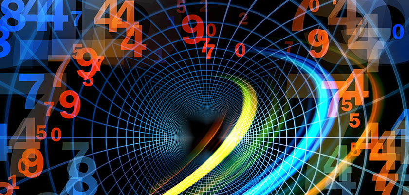

Astrology Center
Astrology Center

Reach Us
601,Ram Nager Dewas

Talk To Astrologer
+91-123456789

 Astrology Center
Astrology Center
In simple terms, numerology is the study of numbers in your life. You can uncover information about the world and also each individual person by using Numerology. Numerology is seen as a universal language of numbers. Numerology can look incredibly complex, and there are so many different types of Numerology that you may not even know where to start, but if you are familiar with Astrology, then you may know a little bit about Numerology; it is similar in quite a few ways but uses a different method to get the information and insight: Numbers. Numerology is the idea that the universe is a system and once broken down we are left with the basic elements, which are numbers. These numbers can then be used to help us to better understand the world and ourselves as individuals.
In Numerology, your life path number is the most important number. It forms the basis of what path your life could take.
Similarly, it should be reflective of who you are, or should be, in your personality and traits.
A life path number also outlines any opportunities or challenges you may face, as well as any lessons you may have to learn along the way.
Each life path number has a different meaning. It is calculated by adding up the numbers in your full date of birth. For example, April 4th 1992, would be 4 + 4 = 8. Then the 1992 is broken down as 1 + 9 + 9 + 2 = 21.
Now you add, the two digits of 21 together like 2 + 1 = 3. This is the same with any double-digit numbers which you should keep adding together until you end up with a 1 digit number. Example: 19 becomes 1 + 9 = 10, then 1 + 0 = 1). Finally, add the 8 and 3 together for your life path number i.e. 8 + 3 = 11.
kundli patrika $ 29
Mangala Dosha $ 29

Black magic $ 29
Also known as your destiny number, an expression number is said to delve into your abilities, desires, and personal goals. It could also make you aware of any inherent traits that you may carry. Your expression number is calculated by converting your FULL birth name (including any middle names) into numbers using the Pythagorean chart. This type of chart correlates a letter with a single-digit number. Then, the total sum is broken down into a single-digit number. Once again the master numbers apply to your destiny number and are not reduced any further. Whatever expression number you are left with has a different meaning and works in combination with other core numbers to build a picture of who you are and what you’re about as a person in the wider universe.
Your soul urge number is often referred to as the Heart’s Desire number in numerology. This can symbolize a reflection of your inner, or true, self.
The most interesting thing about the soul urge number is that it often reveals truths in people that they only recognize once a reading is completed.
For example, your heart's desire number may show that you actually crave power. Or, that you are much deeper and require a higher level of fulfillment.
Alternatively, you may have a need to feel valued or cared for… All of these qualities can often sit beneath the surface and in revelation can be quite enlightening. Even changing the entire direction of a person's life to find true happiness.
The calculation is similar to others using your full birth name. However, you only calculate the value of the vowels to reveal your inner urges or desires.
Your personality number in numerology is calculated using only the consonants in your full name.
This is then followed by the same process of allocating a number to each letter before adding them up and breaking them down to get to a single-digit number or master number.
The personality number is literally the side of you that you allow people to see. In turn, this shows how others see you. What is true of most people is that we hide our true selves and therefore live under a persona.
Sometimes this is done with great consideration. However, most of the time we do this without even realizing, or being entirely conscious of it.
For that reason, it is often quite enlightening to see how your personality number can show the things that you ignore or don’t deal with by acting the way that you do. So, in turn, it can reveal deeper insights into your behaviors in different circumstances.
Lastly but by no means least, your birthday number holds the key to you and your destiny. This number is entirely based on the exact day you were born.
Based on your day of birth with the month, your birthday number will tell you of specific talents and potentially where they fit into your universe in order to give yourself true purpos
All numbers used in numerology include both positive and negative features that should be recognized.
Though numbers have a balance of positive and negative throughout their whole self, it is important to know that numbers are influenced by many factors.
Master numbers in numerology are 11, 22, or 33. They have deep and powerful meanings. The true meanings can be good or bad depending on the context.
herefore, it is important to interpret master numbers properly. Mostly they should be used for guidance or revelation of certain circumstances that impact somebody's life in a way that needs to be addressed.
Typically, the methods used during a numerology reading mean that double-digit numbers found in date of births (birthday numbers) are usually split apart and added together to leave a single-digit number that becomes a part of the calculation.
ut when the result of a calculation equates to a master number, it is not reduced and will carry its own meaning.
Master number 11 can relate to “instinct” and “faith”. Similarly, it could signify fear and anxiety, so has to be carefully read.
Number 22 is the Master Builder. It is the most powerful indicator of ambition and success, though often requires guidance or different perspectives.
The number 33 has various meanings as one of your core numbers i.e. Life Path, Expression, Personality, etc. Not forgetting that all of these master numbers can be combined to form entirely different meanings in partnership with others, or as a triangle of enlightenment!
merology in its fullest form is much more than a reading or insight into who you are as a person. In fact, many followers and advocates of numerology include highly successful celebrities that attribute their careers to numerology.
The science of numerology tells you what your barriers are. Plus, it can give you a direction based on your position in the universe, potentially attributing to this success.
Deep and powerful feelings that many initially find hard to comprehend become apparent, it can inspire people to change their direction completely and begin to treat numerology as a forecast for life.
umerologists often report that once people take the step to look further into their numerology chart, they are so taken with the revelations of some of their core desires and issues in life that they will often continue on their path of discovery and enlightenment.
Once you discover the accuracy of numerology readings, you can discover the truth yourself. Plus, learn what those inner feelings have been trying to tell you all of your life.
Because of the accuracy of reading and insights they reveal, friends and others that have taken numerology readings will often encourage others to look into numerology as a way to find their true strengths and weaknesses.
Through this discovery alone you can give yourself a better idea of what you should and shouldn’t be doing in your life. Furthermore, this could give you a greater purpose to move forward.
Though there are calculators and online tools to work out your individual core numbers, it is important for people to understand that there are so many numbers and meanings behind combinations of numbers and your individual self that you need a proper numerologist to interpret these for you.
Where a birthday calculator can give you that one number and its meaning can show you certain basic principles behind your character, your life path number gives that factor a different meaning or viewpoint. This is where numerology is much more insightful than horoscopes and other spiritual-based methods used in a similar way.
One of the most fascinating aspects of numerology is that the readings are all based around the time you entered the universe in your human form. From your birth. So whether you like your name or not, or when your birthday sits in the year, all of it has a meaning.
If it were known at your time of birth and your parents were numerologists, then effectively you would never have had to consider who you are and what you should be doing in life to make you happy, or important in the world. So be proud of your full name and whenever your birthday may fall! Numerology and its factors suggest everything about the reason you are here at all. And it’s never too late to find out.